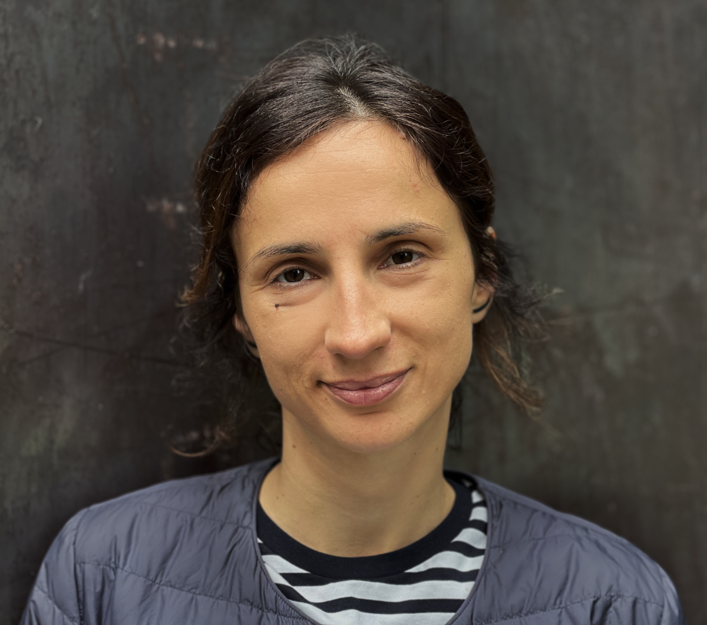

Project manager experienced in developing, implementing and coordinating programs and projects in non-govermental sector. My job mainly consists in analysing, developing and advocating measures to improve socio-economic status of vulnerable groups, developing partnerships with other organisations and fundraising. Along the years I have developed expertise in atypical employment, social protection, social economy, cooperatives, the commons and participatory governance.
21st Century Self-management
"The experience of Yugoslav self-governing socialism is a unique example of a broad, systemic application, of economic democracy principles, aiming to achieve greater participation of employees in economic decision-making, decentralisation of ownership and social reproduction beyond market."